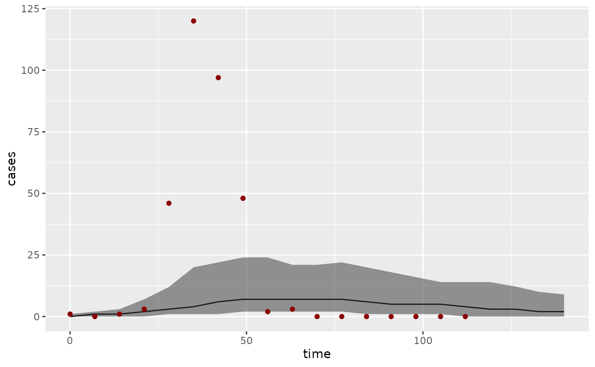
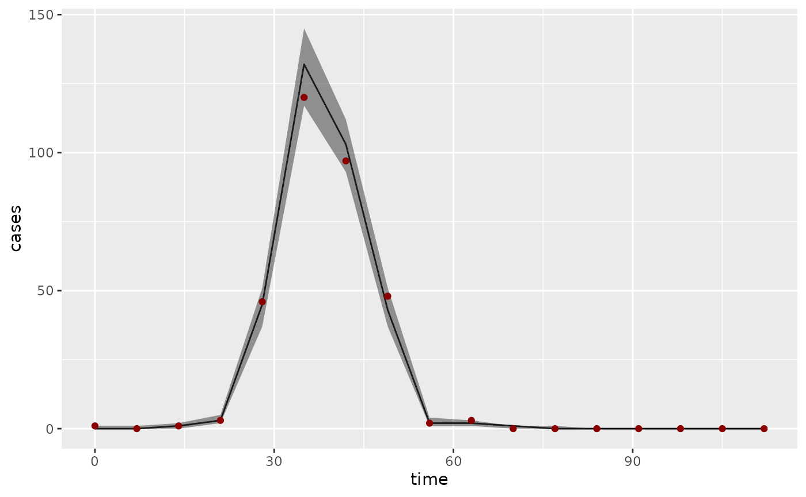

This vignette gives an introduction to using rbi. For the best viewing experience, use the version on the rbi website.
rbi is an R
interface to LibBi, a library for
Bayesian inference with state-space models using high-performance
computer hardware.
The package has been tested on macOS and Linux. It requires a working
installation of LibBi. On macOS, this is easiest done
using the brew command: Install Homebrew, then issue the following command
(using a command shell, i.e. Terminal or similar):
On linux, follow the instructions provided with LibBi.
If you have any trouble installing LibBi you can get help on the LibBi Users mailing list.
The path to the libbi script can be passed as an
argument to rbi, otherwise the package tries to find it
automatically using the which linux/unix command.
If you just want to process the output from LibBi, then you do not need to have LibBi installed.
Installation
The easiest way to install the latest stable version of rbi is via CRAN.
install.packages("rbi")Alternatively, the current development version can be installed using
the remotes package
remotes::install_github("sbfnk/rbi")Getting started
The main computational engine and model grammar behind rbi is provided by LibBi. The LibBi manual is a good place to start for finding out everything there is to know about LibBi models and inference methods.
The rbi package mainly provides two classes:
bi_model and libbi. The bi_model
class is used to load, view and manipulate LibBi model
files. The libbi class is used to run LibBi and perform
inference.
The package also provides two methods for interacting with the NetCDF files
used by LibBi, bi_read and
bi_write. Lastly, it provides a get_traces
function to analyse Markov-chain Monte Carlo (MCMC) traces using the coda package.
The bi_model class
As an example, we consider a simplified version of the SIR model discussed in Del Moral et al. (2014). This is included with the rbi package and can be loaded with
model_file <- system.file(package = "rbi", "SIR.bi")
sir_model <- bi_model(model_file) # load modelOther ways of implementing a (deterministic or stochastic) SIR model
can be found in the collection of SIR models
for LibBi, where you also find how to load them into a
bi_model object, e.g. sir_model. Feel free to
run the commands below with different versions of the model.
The sir_model object now contains the model, which can
be displayed with
sir_model
#> bi_model:
#> =========
#> 1: model SIR {
#> 2: const h = 7
#> 3: const N = 1000
#> 4: const d_infection = 14
#> 5: noise n_transmission
#> 6: noise n_recovery
#> 7: state S
#> 8: state I
#> 9: state R
#> 10: state Z
#> 11: obs Incidence
#> 12: param p_rep
#> 13: param p_R0
#> 14: sub parameter {
#> 15: p_rep ~ uniform(0,1)
#> 16: p_R0 ~ uniform(1,3)
#> 17: }
#> 18: sub initial {
#> 19: S <- N - 1
#> 20: I <- 1
#> 21: R <- 0
#> 22: Z <- 1
#> 23: }
#> 24: sub transition {
#> 25: n_transmission ~ wiener()
#> 26: n_recovery ~ wiener()
#> 27: Z <- (t_now % 7 == 0 ? 0 : Z)
#> 28: inline i_beta = p_R0 / d_infection * exp(n_transmission)
#> 29: inline i_gamma = 1 / d_infection * exp(n_recovery)
#> 30: ode (alg='RK4(3)', h=1e-1, atoler=1e-2, rtoler=1e-5) {
#> 31: dS/dt = - i_beta * S * I / N
#> 32: dI/dt = i_beta * S * I / N - i_gamma * I
#> 33: dR/dt = i_gamma * I
#> 34: dZ/dt = i_beta * S * I / N
#> 35: }
#> 36: }
#> 37: sub observation {
#> 38: Incidence ~ poisson(p_rep * Z)
#> 39: }
#> 40: sub proposal_initial {
#> 41: S <- N - 1
#> 42: I <- 1
#> 43: R <- 0
#> 44: Z <- 1
#> 45: }
#> 46: sub proposal_parameter {
#> 47: p_rep ~ truncated_gaussian(mean = p_rep, std = 0.03, lower = 0, upper = 1)
#> 48: p_R0 ~ truncated_gaussian(mean = p_R0, std = 0.2, lower = 1, upper = 3)
#> 49: }
#> 50: }A part of the model can be shown with, for example,
sir_model[35:38]
#> [1] "}" "}"
#> [3] "sub observation {" "Incidence ~ poisson(p_rep * Z)"or, for example,
get_block(sir_model, "parameter")
#> [1] "p_rep ~ uniform(0,1)" "p_R0 ~ uniform(1,3)"To get a list of certain variables, you can use the
var_names function. For example, to get a list of states,
you can use
var_names(sir_model, type = "state")
#> [1] "S" "I" "R" "Z"There are also various methods for manipulating a model, such as
remove_lines, insert_line,
replace_all.
The fix method fixes a variable to one value. This can
be useful, for example, to run the deterministic equivalent of a
stochastic model for testing purposes:
det_sir_model <- fix(sir_model, n_transmission = 0, n_recovery = 0)To get documentation for any of these methods, use the links in the
documentation for bi_model.
Generating a dataset
First, let’s create a data set from the SIR model.
set.seed(1001912)
sir_data <- generate_dataset(sir_model, end_time = 16 * 7, noutputs = 16)This simulates the model a single time from time 0 until time 16*7
(say, 16 weeks with a daily time step), producing 16 outputs (one a
week). Note that we have specified a random seed to make this document
reproducible. If you omit the set.seed command or set it to
a different number, the results will be different even when run with the
same set of commands. Also note that LibBi compiles the model
code only the first time it is run. If you run the command above a
second time, it should run much faster.
The generate_dataset function returns a
libbi object:
sir_data
#> Wrapper around LibBi
#> ======================
#> Model: SIR
#> Run time: 0.002298 seconds
#> Number of samples: 1
#> State trajectories recorded: S I R Z
#> Noise trajectories recorded: n_transmission n_recovery
#> Observation trajectories recorded: Incidence
#> Parameters recorded: p_rep p_R0The generated dataset can be viewed and/or stored in a variable using
bi_read:
dataset <- bi_read(sir_data)The bi_read function takes the name of a NetCDF file or
a libbi object (in which case it locates the output file)
and stores the contents in a list of data frames or vectors, depending
on the dimensionality of the contents. Note that, if no
working_folder is specified, the model and output files
will be stored in a temporary folder.
names(dataset)
#> [1] "n_transmission" "n_recovery" "S" "I"
#> [5] "R" "Z" "Incidence" "p_rep"
#> [9] "p_R0" "clock"
dataset$p_R0
#> value
#> 1 2.269623
dataset$Incidence
#> time value
#> 1 0 1
#> 2 7 0
#> 3 14 1
#> 4 21 3
#> 5 28 46
#> 6 35 120
#> 7 42 97
#> 8 49 48
#> 9 56 2
#> 10 63 3
#> 11 70 0
#> 12 77 0
#> 13 84 0
#> 14 91 0
#> 15 98 0
#> 16 105 0
#> 17 112 0We can visualise the generated incidence data with
The libbi class
The libbi class manages the interaction with
LibBi such as sampling from the prior or posterior
distribution. For example, the sir_data object above is of
type libbi:
class(sir_data)
#> [1] "libbi"Th bi_generate_dataset is one particular way of
generating a libbi object, used only to generate test data
from a model. The standard way of creating a libbi object
for Bayesian inference is using the libbi command
bi <- libbi(sir_model)This initialises a libbi object with the model created
earlier and assigns it to the variable bi.
class(bi)
#> [1] "libbi"Let’s sample from the prior of the SIR model:
bi_prior <- sample(
bi, target = "prior", nsamples = 1000, end_time = 16 * 7, noutputs = 16
)This step calls LibBi to sample from the prior distribution of the previously specified model, generating 1,000 samples and each time running the model for 16 * 7 = 112 time steps and writing 16 outputs (i.e., every 7 time steps). LibBi parses the model, creates C++ code, compiles it and run the model. If the model is run again, it should do so much quicker because it will use the already compiled C++ code to run the model:
bi_prior <- sample(bi_prior)The sample command returns an updated libbi
object which, in this case, we just assign again to the bi
object. Any call of sample preserves options passed to the
previous call of sample and libbi, unless they
are overwritten by arguments passed to sample (e.g.,
passing a new nsamples argument). Let’s have a closer look
at the bi object:
bi_prior
#> Wrapper around LibBi
#> ======================
#> Model: SIR
#> Run time: 0.059634 seconds
#> Number of samples: 1000
#> State trajectories recorded: S I R Z
#> Noise trajectories recorded: n_transmission n_recovery
#> Parameters recorded: p_rep p_R0To see even more detail, try
str(bi_prior)
#> List of 21
#> $ options :List of 5
#> ..$ build-dir: chr "/tmp/RtmpDyVGLT/SIR3b6533dab0c8"
#> ..$ seed : num 3.33e+08
#> ..$ nsamples : num 1000
#> ..$ end-time : num 112
#> ..$ noutputs : num 16
#> $ path_to_libbi : chr "/usr/local/bin/libbi"
#> $ model : 'bi_model' chr [1:50] "model SIR {" "const h = 7" "const N = 1000" "const d_infection = 14" ...
#> $ model_file_name : chr "/tmp/RtmpDyVGLT/SIR3b6533dab0c8/SIR.bi"
#> $ dims : list()
#> $ time_dim : chr(0)
#> $ coord_dims : list()
#> $ thin : num 1
#> $ output_every : num NA
#> $ debug : logi FALSE
#> $ command : chr "/usr/local/bin/libbi sample --build-dir /tmp/RtmpDyVGLT/SIR3b6533dab0c8 --seed 332755949 --target prior --nsamp"| __truncated__
#> $ output_file_name: chr "/tmp/RtmpDyVGLT/SIR3b6533dab0c8/SIR_output3b653b5bad8a.nc"
#> $ log_file_name : chr "/tmp/RtmpDyVGLT/SIR3b6533dab0c8/output3b65454d1e57.txt"
#> $ user_log_file : logi FALSE
#> $ timestamp :List of 1
#> ..$ output: POSIXct[1:1], format: "2024-06-01 06:19:44"
#> $ run_flag : logi TRUE
#> $ error_flag : logi FALSE
#> $ use_cache : logi TRUE
#> $ supplement : NULL
#> $ .gc_env :<environment: 0x56087d7a9010>
#> $ .cache :<environment: 0x56087ddb9490>
#> - attr(*, "class")= chr "libbi"We can see the object contains 14 fields, including the model, the
path to the libbi script, and the command used to run libbi
(bi$command); the options field contains all
the options that LibBi was called with. This includes
the ones we passed to sample
bi_prior$options
#> $`build-dir`
#> [1] "/tmp/RtmpDyVGLT/SIR3b6533dab0c8"
#>
#> $seed
#> [1] 332755949
#>
#> $nsamples
#> [1] 1000
#>
#> $`end-time`
#> [1] 112
#>
#> $noutputs
#> [1] 16The other fields contain various bits of information about the
object, including the model used, the command used to run
LibBi (bi$command) and the output file
name:
bi_prior$output_file_name
#> [1] "/tmp/RtmpDyVGLT/SIR3b6533dab0c8/SIR_output3b653b5bad8a.nc"We can get the results of the sampling run using
bi_read
prior <- bi_read(bi_prior$output_file_name)or with the shorthand
prior <- bi_read(bi_prior)which looks at the output_file_name field to read in the
data. Let’s look at the returned object
str(prior)
#> List of 9
#> $ n_transmission:'data.frame': 17000 obs. of 3 variables:
#> ..$ np : num [1:17000] 0 0 0 0 0 0 0 0 0 0 ...
#> ..$ time : num [1:17000] 0 7 14 21 28 35 42 49 56 63 ...
#> ..$ value: num [1:17000] 0 -1.548 0.183 -0.361 0.408 ...
#> $ n_recovery :'data.frame': 17000 obs. of 3 variables:
#> ..$ np : num [1:17000] 0 0 0 0 0 0 0 0 0 0 ...
#> ..$ time : num [1:17000] 0 7 14 21 28 35 42 49 56 63 ...
#> ..$ value: num [1:17000] 0 0.014 0.42 -2.066 -1.207 ...
#> $ S :'data.frame': 17000 obs. of 3 variables:
#> ..$ np : num [1:17000] 0 0 0 0 0 0 0 0 0 0 ...
#> ..$ time : num [1:17000] 0 7 14 21 28 35 42 49 56 63 ...
#> ..$ value: num [1:17000] 999 999 998 998 997 ...
#> $ I :'data.frame': 17000 obs. of 3 variables:
#> ..$ np : num [1:17000] 0 0 0 0 0 0 0 0 0 0 ...
#> ..$ time : num [1:17000] 0 7 14 21 28 35 42 49 56 63 ...
#> ..$ value: num [1:17000] 1 0.847 0.609 0.588 0.816 ...
#> $ R :'data.frame': 17000 obs. of 3 variables:
#> ..$ np : num [1:17000] 0 0 0 0 0 0 0 0 0 0 ...
#> ..$ time : num [1:17000] 0 7 14 21 28 35 42 49 56 63 ...
#> ..$ value: num [1:17000] 0 0.635 1.31 1.674 1.978 ...
#> $ Z :'data.frame': 17000 obs. of 3 variables:
#> ..$ np : num [1:17000] 0 0 0 0 0 0 0 0 0 0 ...
#> ..$ time : num [1:17000] 0 7 14 21 28 35 42 49 56 63 ...
#> ..$ value: num [1:17000] 1 0.483 0.437 0.343 0.532 ...
#> $ p_rep :'data.frame': 1000 obs. of 2 variables:
#> ..$ np : num [1:1000] 0 1 2 3 4 5 6 7 8 9 ...
#> ..$ value: num [1:1000] 0.717 0.215 0.969 0.504 0.894 ...
#> $ p_R0 :'data.frame': 1000 obs. of 2 variables:
#> ..$ np : num [1:1000] 0 1 2 3 4 5 6 7 8 9 ...
#> ..$ value: num [1:1000] 1.14 2.29 1.27 2.37 1.68 ...
#> $ clock : num 59634This is a list of 9 objects, 8 representing each of the (noise/state)
variables and parameters in the file, and one number clock,
representing the time spent running the model in microseconds.
We can see that the time-varying variables are represented as data
frames with three columns: np (enumerating individual
simulations), time and value. Parameters don’t
vary in time and just have np and value
columns.
Fitting a model to data using PMCMC
Let’s perform inference using Particle Markov-chain Metropolis
Hastings (PMMH). The following command will generate 16 * 10,000 =
160,000 simulations and therefore may take a little while to run (if you
want to see the samples progress, use verbose=TRUE in the
sample call).
bi <- sample(bi_prior, target = "posterior", nparticles = 32, obs = sir_data)This samples from the posterior distribution. Remember that options
are preserved from previous runs (because we passed the bi)
as first argument, so we don’t need to specify nsamples,
end_time and noutputs again, unless we want to
change them. The nparticles option specifies the number of
particles.
You can also pass a list of data frames (each element of the list
corresponding to one observed variable as the obs argument,
for example
df <- data.frame(
time = c(0, 7, 14, 21, 28, 35, 42, 49, 56, 63, 70, 77, 84, 91, 98, 105, 112),
value = c(1, 6, 2, 26, 99, 57, 78, 57, 15, 9, 4, 1, 1, 1, 0, 2, 0)
)
bi_df <- sample(
bi_prior, target = "posterior", nparticles = 32, obs = list(Incidence = df)
)Input, init and observation files (see the LibBi manual for
details) can be specified using the init,
input, obs options, respectively. They can
each be specified either as the name of a NetCDF file containing the
data, or a libbi object (in which case the output file will
be taken) or directly via an appropriate R object
containing the data (e.g., a character vector of length one, or a list
of data frames or numeric vectors). In the case of the command above,
init is specified as a list, and obs as a
libbi object. The Incidence variable of the
sir_data object will be taken as observations.
The time dimension (or column, if a data frame) in the passed
init, input and/or obs files can
be specified using the time_dim option. If this is not
given, it will be assumed to be time, if such a dimension
exists or, if not, any numeric column not called value (or
the contents of the value_column option). If this does not
produce a unique column name, an error will be thrown. All other
dimensions/columns in the passed options will be interpreted as
additional dimensions in the data, and stored in the dims
field of the libbi object.
Any other options (apart from log_file_name, see the Debugging section) will be passed on to the
command libbi – for a complete list, see the LibBi manual. Hyphens
can be replaced by underscores so as not to confuse R (see
end_time). Any arguments starting with
enable/disable can be specified as boolean
(e.g., assert=TRUE). Any dry- options can be
specified with a "dry" argument, e.g.,
parse="dry".
Analysing an MCMC run
Let’s get the results of the preceding sample
command:
bi_contents(bi)
#> [1] "time" "n_transmission" "n_recovery" "S"
#> [5] "I" "R" "Z" "p_rep"
#> [9] "p_R0" "clock" "loglikelihood" "logprior"
posterior <- bi_read(bi)
str(posterior)
#> List of 11
#> $ n_transmission:'data.frame': 17000 obs. of 3 variables:
#> ..$ np : num [1:17000] 0 0 0 0 0 0 0 0 0 0 ...
#> ..$ time : num [1:17000] 0 7 14 21 28 35 42 49 56 63 ...
#> ..$ value: num [1:17000] 0 0.204 -0.938 -1.049 1.34 ...
#> $ n_recovery :'data.frame': 17000 obs. of 3 variables:
#> ..$ np : num [1:17000] 0 0 0 0 0 0 0 0 0 0 ...
#> ..$ time : num [1:17000] 0 7 14 21 28 35 42 49 56 63 ...
#> ..$ value: num [1:17000] 0 -2.105 0.49 0.866 1.438 ...
#> $ S :'data.frame': 17000 obs. of 3 variables:
#> ..$ np : num [1:17000] 0 0 0 0 0 0 0 0 0 0 ...
#> ..$ time : num [1:17000] 0 7 14 21 28 35 42 49 56 63 ...
#> ..$ value: num [1:17000] 999 998 983 501 276 ...
#> $ I :'data.frame': 17000 obs. of 3 variables:
#> ..$ np : num [1:17000] 0 0 0 0 0 0 0 0 0 0 ...
#> ..$ time : num [1:17000] 0 7 14 21 28 35 42 49 56 63 ...
#> ..$ value: num [1:17000] 1 1.47 11.71 396.01 277.32 ...
#> $ R :'data.frame': 17000 obs. of 3 variables:
#> ..$ np : num [1:17000] 0 0 0 0 0 0 0 0 0 0 ...
#> ..$ time : num [1:17000] 0 7 14 21 28 35 42 49 56 63 ...
#> ..$ value: num [1:17000] 0 0.623 5.348 103.185 446.216 ...
#> $ Z :'data.frame': 17000 obs. of 3 variables:
#> ..$ np : num [1:17000] 0 0 0 0 0 0 0 0 0 0 ...
#> ..$ time : num [1:17000] 0 7 14 21 28 35 42 49 56 63 ...
#> ..$ value: num [1:17000] 1 1.1 15 482.1 224.3 ...
#> $ p_rep :'data.frame': 1000 obs. of 2 variables:
#> ..$ np : num [1:1000] 0 1 2 3 4 5 6 7 8 9 ...
#> ..$ value: num [1:1000] 0.000231 0.014226 0.037137 0.037137 0.037137 ...
#> $ p_R0 :'data.frame': 1000 obs. of 2 variables:
#> ..$ np : num [1:1000] 0 1 2 3 4 5 6 7 8 9 ...
#> ..$ value: num [1:1000] 2.23 2.25 1.77 1.77 1.77 ...
#> $ clock : num 5796949
#> $ loglikelihood :'data.frame': 1000 obs. of 2 variables:
#> ..$ np : num [1:1000] 0 1 2 3 4 5 6 7 8 9 ...
#> ..$ value: num [1:1000] -2381 -1321 -556 -556 -556 ...
#> $ logprior :'data.frame': 1000 obs. of 2 variables:
#> ..$ np : num [1:1000] 0 1 2 3 4 5 6 7 8 9 ...
#> ..$ value: num [1:1000] -0.693 -0.693 -0.693 -0.693 -0.693 ...We can see that this has two more objects than previously when we
specified target="prior": loglikelihood (the
estimated log-likelihood of the parameters at each MCMC step) and
logprior (the estimated log-prior density of the parameters
at each MCMC step).
To get a summary of the parameters sampled, use
summary(bi)
#> var Min. 1st Qu. Median Mean 3rd Qu. Max.
#> 1 p_rep 0.0002305077 0.3178343 0.3330986 0.3303792 0.3444797 0.4158924
#> 2 p_R0 1.4064460854 2.2859129 2.6853853 2.5449143 2.8629936 2.9992701A summary of sampled trajectories can be obtained using
summary(bi, type = "state")Any particular posterior sample can be viewed with
extract_sample (with indices running from 0 to
nsamples - 1):
extract_sample(bi, 314)To analyse MCMC outputs, we can use the coda package
and the get_traces function of rbi. Note
that, to get exactly the same traces, you would have to set the seed as
above.
library("coda")
traces <- mcmc(get_traces(bi))We can, for example, visualise parameter traces and densities with
plot(traces)Compare this to the marginal posterior distributions to the “correct” parameters used to generate the data set:
bi_read(sir_data, type = "param")
#> $p_rep
#> value
#> 1 0.3493278
#>
#> $p_R0
#> value
#> 1 2.269623For more details on using coda to further analyse the chains, see the website of the coda package. For more plotting functionality, the ggmcmc package is also worth considering.
Predictions
We can use the predict function to re-simulate the
fitted model using the estimated parameters, that is to generate samples
from \(p(x_t|\theta)\) where the \(\theta\) are distributed according to the
marginal posterior distribution \(p(\theta|y^*_t)\) (here: \(\theta\) are fixed parameters, \(x_t\) are state trajectories and \(y^*_t\) observed data points, as in the LibBi manual). This
can be useful, for example, for comparing typical model trajectories to
the data, or for running the model beyond the last data point.
pred_bi <- predict(
bi, start_time = 0, end_time = 20 * 7, output_every = 7,
with = c("transform-obs-to-state")
)where with=c("transform-obs-to-state") tells LibBi to
treat observations as a state variable, that is to randomly generate
observations, i.e. samples from \(p(y_t|\theta)\) where, again, \(\theta\) are distributed according to the
posterior distribution \(p(\theta|y^*_t)\) (see the
with-transform-obs-to-state option in the LibBi manual).
Sample observations
To sample observations from sampled posterior state trajectories, that is samples from \(p(y_t|x_t)\) where the \(x_t\) are distributed according to the posterior distribution \(p(x_t | y_t)\), you can use.
obs_bi <- sample_obs(bi)Compare this to the data:
summary(obs_bi, type = "obs")
#> var time Min. 1st Qu. Median Mean 3rd Qu. Max.
#> 1 Incidence 0 0 0 0 0.490 1 4
#> 2 Incidence 7 0 0 0 0.698 1 6
#> 3 Incidence 14 0 0 1 1.391 2 7
#> 4 Incidence 21 0 2 4 3.899 5 16
#> 5 Incidence 28 0 37 44 44.200 52 80
#> 6 Incidence 35 0 106 116 115.630 127 170
#> 7 Incidence 42 0 88 98 96.952 108 148
#> 8 Incidence 49 0 39 45 45.241 52 80
#> 9 Incidence 56 0 2 3 3.634 5 15
#> 10 Incidence 63 0 1 2 2.359 3 12
#> 11 Incidence 70 0 0 0 0.656 1 6
#> 12 Incidence 77 0 0 0 0.275 0 5
#> 13 Incidence 84 0 0 0 0.123 0 3
#> 14 Incidence 91 0 0 0 0.053 0 2
#> 15 Incidence 98 0 0 0 0.041 0 2
#> 16 Incidence 105 0 0 0 0.017 0 1
#> 17 Incidence 112 0 0 0 0.008 0 1
dataset$Incidence
#> time value
#> 1 0 1
#> 2 7 0
#> 3 14 1
#> 4 21 3
#> 5 28 46
#> 6 35 120
#> 7 42 97
#> 8 49 48
#> 9 56 2
#> 10 63 3
#> 11 70 0
#> 12 77 0
#> 13 84 0
#> 14 91 0
#> 15 98 0
#> 16 105 0
#> 17 112 0Filtering
The other so-called clients of LibBi (besides sample)
are supported through commands of the same name: `filter, optimise and
rewrite. For example, to run a particle filter on the last posterior
sample generated above, you can use:
bi_filtered <- filter(bi)Plotting
Output form LibBi runs can be visualised using standard R plotting
routines or plotting packages such as ggplot2. The
summary function can help with this. For example, to plot
observations randomly generated from the posterior distribution of the
parameters and compare them to the data we can use
ps <- summary(pred_bi, type = "obs")
library("ggplot2")
ggplot(ps, aes(x = time)) +
geom_line(aes(y = Median)) +
geom_ribbon(aes(ymin = `1st Qu.`, ymax = `3rd Qu.`), alpha = 0.5) +
geom_point(aes(y = value), dataset$Incidence, color = "darkred") +
ylab("cases")
where we have plotted the median fit as a black line, the interquartile range as a grey ribbon, and the data points as dark red dots. Compare this to observations randomly generated from the posterior distribution of trajectories:
os <- summary(obs_bi, type = "obs")
ggplot(os, aes(x = time)) +
geom_line(aes(y = Median)) +
geom_ribbon(aes(ymin = `1st Qu.`, ymax = `3rd Qu.`), alpha = 0.5) +
geom_point(aes(y = value), dataset$Incidence, color = "darkred") +
ylab("cases")
Saving and loading libbi objects
rbi provides its own versions of the
saveRDS and readRDS functions called
save_libbi and read_libbi. These make sure
that all information (including any options, input, init and observation
files) is stored in the object.
save_libbi(bi, "bi.rds")
bi <- read_libbi("bi.rds")
bi
#> Wrapper around LibBi
#> ======================
#> Model: SIR
#> Run time: 5.796949 seconds
#> Number of samples: 1000
#> State trajectories recorded: S I R Z
#> Noise trajectories recorded: n_transmission n_recovery
#> Parameters recorded: p_rep p_R0Creating libbi objects from previous runs
To recreate a libbi object from a previous R session,
use attach_data. For example, one could use the following
code to get the acceptance rate for a LibBi run with a given
output and model file:
pz_run_output <- bi_read(system.file(package = "rbi", "example_output.nc"))
pz_model_file <- system.file(package = "rbi", "PZ.bi")
pz_posterior <- attach_data(libbi(pz_model_file), "output", pz_run_output)
traces <- mcmc(get_traces(pz_posterior))
a <- 1 - rejectionRate(traces)
a
#> mu sigma
#> 0.4724409 0.4724409Debugging
For a general check of model syntax, the rewrite command
is useful:
rewrite(sir_model)This generates the internal representation of the model for LibBi. It
doesn’t matter so much what this looks like, but it will throw an error
if there is a problem. If libbi throws an error, it is best
to investigate with debug = TRUE, and setting
working_folder to a folder that one can then use for
debugging. Output of the libbi call can be saved in a file
using the log_file_name option (by default a temporary
file).
Related packages
rbi.helpers contains higher-level methods to interact with LibBi, including methods for plotting the results of libbi runs and for adapting the proposal distribution and number of particles. For more information, see the rbi.helpers vignette.
References
- Murray, L.M. (2013). Bayesian state-space modelling on high-performance hardware using LibBi.